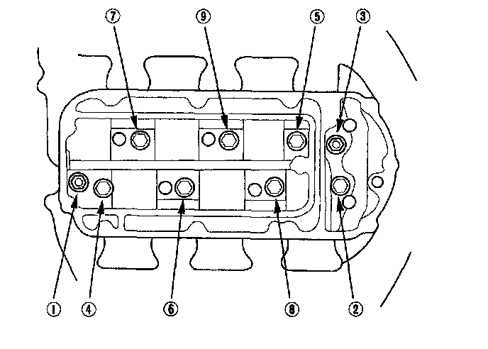
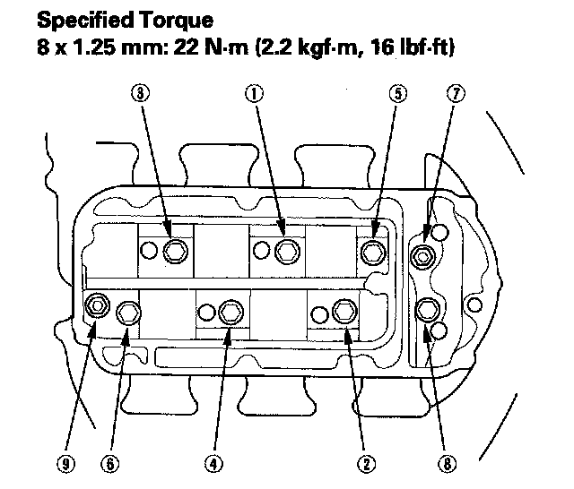

Intake Manifold Removal and Installation
Intake Manifold Removal and InstallationIntake Manifold:
Removal
1. Remove the engine cover.
2. Remove the breather pipe (A), then remove the intake air duct (B).
3. Remove the positive crankcase ventilation (PCV) hose (A), brake booster vacuum hose (B), vacuum hose (C), and disconnect the intake manifold tuning (IMT) actuator connector (D).
4. Remove the evaporative emission (EVAP) canister hose (A), and disconnect the EVAP canister purge valve connector (B), throttle actuator connector (C), and manifold absolute pressure (MAP) sensor connector (D).
5. Remove and plug the water bypass hoses (E).
6. Remove the upper cover mounting bolts and nuts sequentially in two or three steps, then remove the upper cover.
7. Remove the intake manifold mounting bolts and nuts sequentially in two or three steps, then remove the intake manifold.

Installation
1. Install the gasket on the injector base.
2. Install the intake manifold. Tighten the bolts and nuts sequentially in two or three steps. Always use a new intake manifold gasket.

3. Install the upper cover. Tighten the bolts and nuts sequentially in two or three steps. Always use a new gasket.
4. Install the evaporative emission (EVAP) canister hose (A) and water bypass hoses (B).
5. Connect the manifold absolute pressure (MAP) sensor connector (C), throttle actuator connector (D) and EVAP canister purge valve connector (E).
6. Install the positive crankcase ventilation (PCV) hose (A), brake booster vacuum hose (B), vacuum hose (C) and connect the intake manifold tuning (IMT) actuator connector (D).
7. Install the intake air duct (A), then install the breather pipe (B).
8. Install the engine cover.
9. Clean up any spilled engine coolant.
10. After installation, check that all tubes, hoses, and connectors are installed correctly.
11. Refill the radiator with engine coolant, and bleed air from the cooling system with heater valve open.